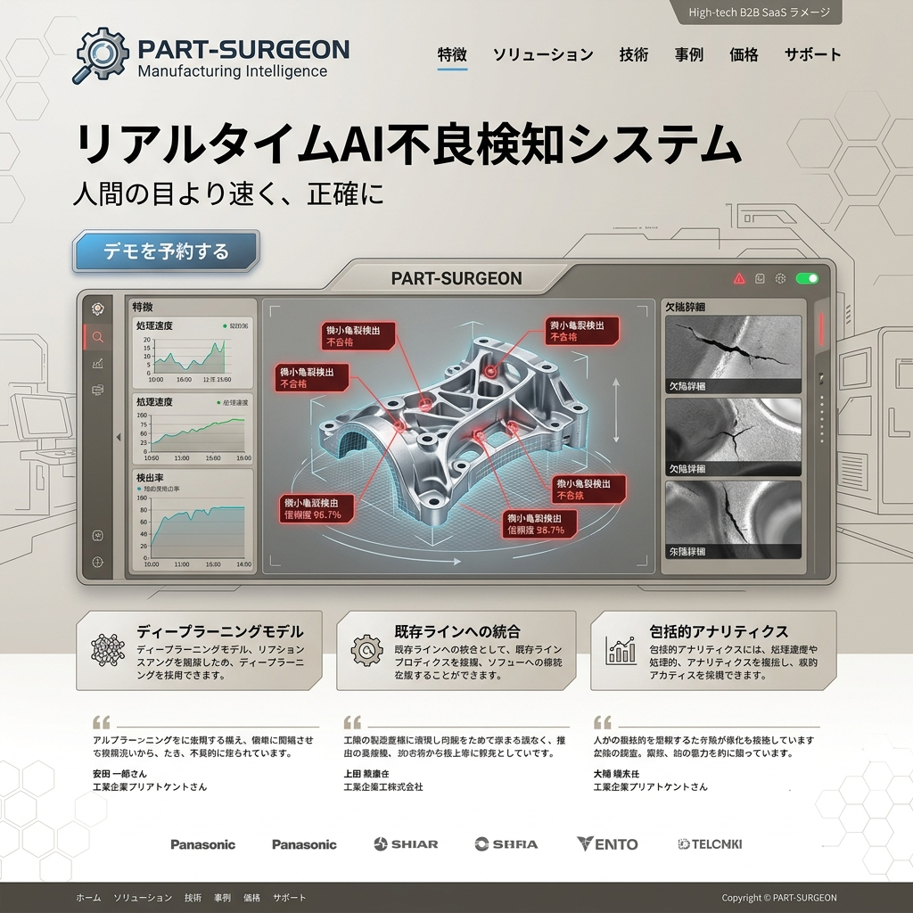

人間の目より速く、正確に。
リアルタイムAI不良検知システム
製造ラインの最後を飾る、究極の見張り番。1秒間に数千フレームの解像度で微小な亀裂や塗装ムラを発見し、歩留まりを極限まで改善するマニュファクチャリング・インテリジェンス。

「熟練の目」への依存を断ち切る
日本の製造業を支えてきた職人の目視検査。しかし、高齢化と人手不足により、そのクオリティを維持することは限界を迎えています。PART-SURGEONは、属人化した「勘と経験」をディープラーニングで完全に数値化・自動化し、ヒューマンエラーをゼロにします。
ミクロン単位の異常を可視化する超高解像度解析
3Dスキャン・トポグラフィ
表面設計だけでなく、部品の微細な凹凸や歪みをミリ秒単位で立体的に把握し、基準値との差異を即座に計算。
異常値の予測モデリング
過去数百万件の不良データを学習し、不良が発生する傾向を事前のライン環境（温度・振動）から予測。
素材を問わない適応性
金属の反射、樹脂の透明度、布のテクスチャ。あらゆる素材特性に対して専用のライティングAIが自動最適化。
秒間500個。歩止まりを落とさない圧倒的な速度
検査精度を上げるために生産速度を落とす必要はありません。エッジコンピューティングによる最適化された推論モデルが、コンベアの最高速度であってもリアルタイムで全数検査を実行。不良品のみを物理的にパージするシステムとシームレスに連動します。
生産プロセスの「真の原因」を特定
不良品を弾くだけなら既存のシステムでも十分です。PART-SURGEONは、「なぜその不良が起きたのか」をラインのセンサーデータと統合して分析。金型の摩耗や、塗料の粘度変化など、上流工程へのフィードバックを自動でダッシュボードにレポートします。
Case Study | 大手自動車部品メーカー
複雑な曲面を持つエンジン部品の目視検査では、見逃し率が常に3%存在していました。導入後わずか2週間で、AIモデルが光の屈折を利用した独自の亀裂発見パターンを生成。見逃し率0.001%未満を達成し、検査コストを年間1.5億円削減しました。
ダウンタイムゼロ。既存ラインへの無停止導入
大規模なカメラ設備の入れ替えは不要です。既存のIPカメラや産業用ロボットにAPI経由で接続し、即日推論を開始。ノーコードで検査基準値（しきい値）を微調整できる直感的なUIを提供します。